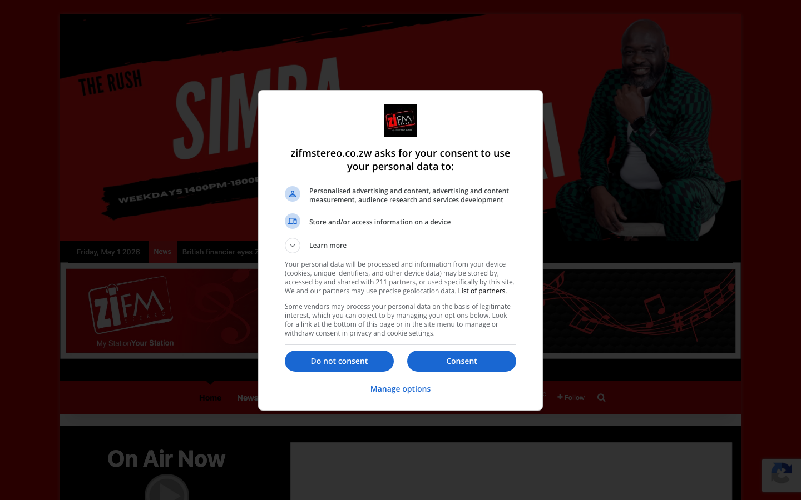

Overview
| Domain | zifmstereo.co.zw |
|---|---|
| Category | news |
| Sector tags | media |
| Theme | jannah |
| Tranco rank | — |
| WP detection score | 90 / 100 |
| WP version | — |
| CDN | cloudflare |
| IP | 104.21.30.193 |
| Homepage size | 676 KB |
| Verified at | 2026-05-01T12:34:10.498868+00:00 |
Hosting fingerprint
| Host panel | cpanel |
|---|---|
| Server header | cloudflare |
| TLS cert issuer | — |
| Reverse PTR | — |
Evidence: path:/cpanel->cpanel
Plugins detected (12)
WordPress signals
| Signal | Weight |
|---|---|
| wp_json_valid | +25 |
| link_header_wp_api | +20 |
| wp_content_path | +15 |
| wp_includes_path | +15 |
| wp_login_200 | +10 |
| plugin_path | +5 |
| theme_path | +5 |
| wp_body_class | +5 |
Discovery sources
| Source | Hint |
|---|---|
| cc-cdx | CC-MAIN-2026-17 |
| gov-zw | https://en.wikipedia.org/wiki/Telecommunications_in_Zimbabwe |